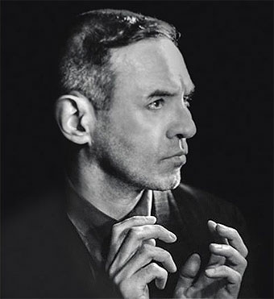
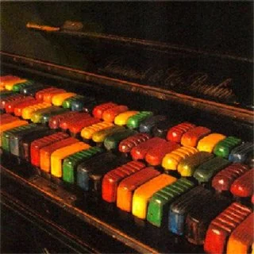
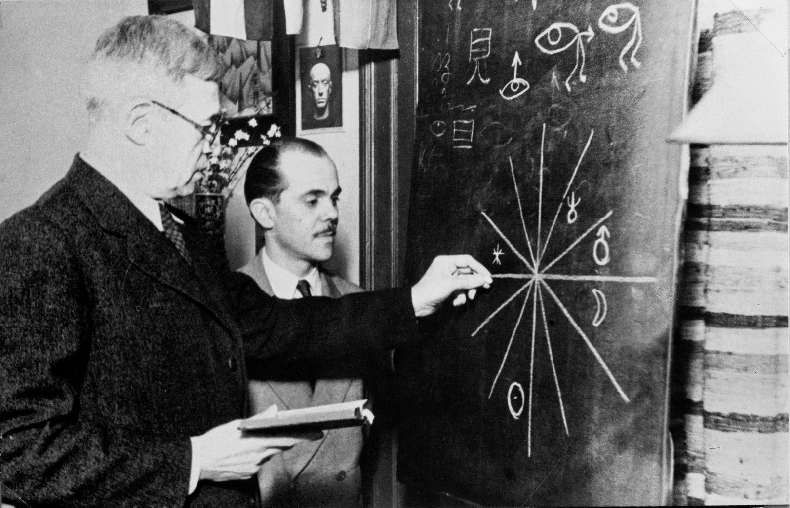

Oscar Agustín Alejandro Schulz Solari, más conocido como Xul Solar (San Fernando, 14 de diciembre de 1887-Tigre, 9 de abril de 1963), fue un pintor, escultor, escritor, músico, astrólogo, esoterista, inventor y lingüista argentino. Nació en el seno de una familia de origen europeo, hijo del alemán Emilio Schulz —con quien colaboró en la Penitenciaría Nacional— y de la italiana Agustina Solari, sufriendo en su juventud la pérdida de su hermana menor por fiebre tifoidea. Criado en un entorno de alta estimulación intelectual, cursó estudios en colegios de perfil francés e inglés en Buenos Aires, e inició la carrera de arquitectura en 1905, la cual abandonó a los dos años para volcarse de lleno a sus verdaderas pasiones: las artes plásticas, los idiomas, las religiones, la astrología y la música.
Su formación y sensibilidad estuvieron profundamente marcadas por el ámbito musical, una herencia familiar que lo llevó a dominar la cítara y el piano, a pesar de haber tenido que abandonar el violín tras sufrir un accidente a caballo. Como asiduo concurrente a los espectáculos del Teatro Colón, se convirtió en un gran dinamizador cultural de su entorno, impulsando la carrera de su amigo Juan de Dios Filiberto hacia la música sinfónica y entablando una estrecha amistad con el reconocido maestro de piano Vicente Scaramuzza.


Xul Solar estuvo profundamente conectado con la vanguardia intelectual y artística de su época, integrando el núcleo de los movimientos renovadores en la primera mitad del siglo XX. Su amistad más célebre y duradera fue con Jorge Luis Borges, con quien compartía largas tertulias sobre misticismo e idiomas, sirviendo de inspiración directa para la literatura borgiana. Asimismo, el escritor Leopoldo Marechal lo inmortalizó en su novela Adán Buenosayres bajo el personaje del "Astrólogo Schultze", mientras que el pintor cubista Emilio Pettoruti fue su gran aliado en la renovación estética de las artes plásticas locales tras regresar juntos de Europa. Su círculo en Buenos Aires se completaba con figuras de la talla de Macedonio Fernández, Oliverio Girondo y el artista uruguayo Joaquín Torres García. Además, durante sus doce años en el viejo continente, asimiló las influencias de grandes referentes internacionales como el pintor Wassily Kandinsky y el ocultista británico Aleister Crowley, consolidando un bagaje cultural único.